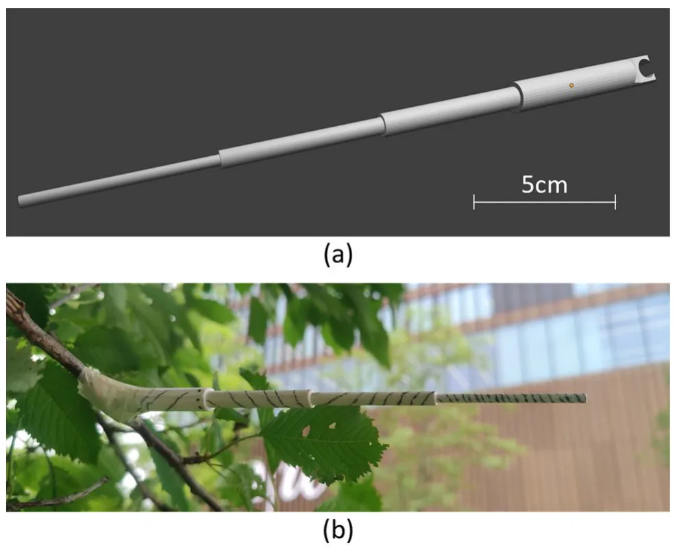
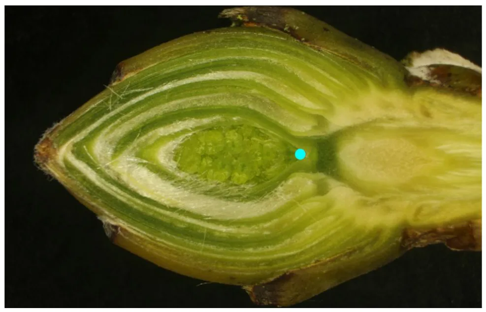
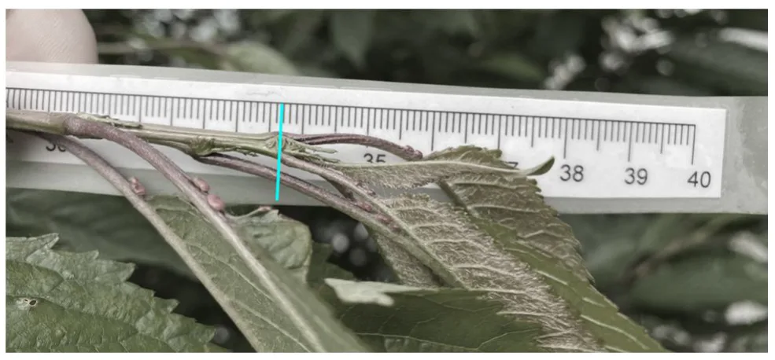
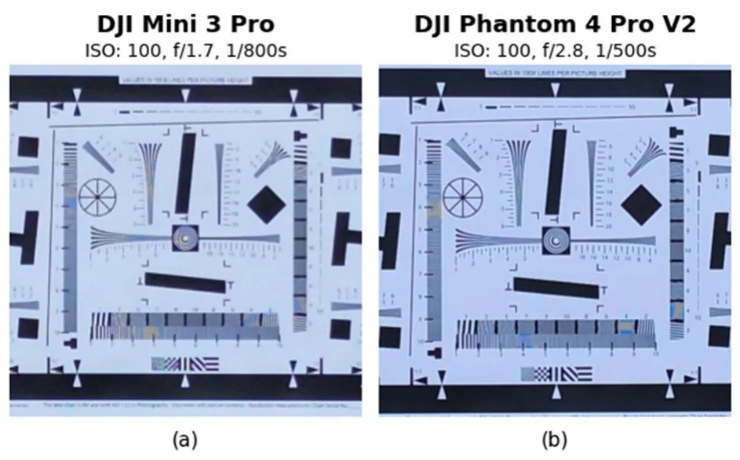
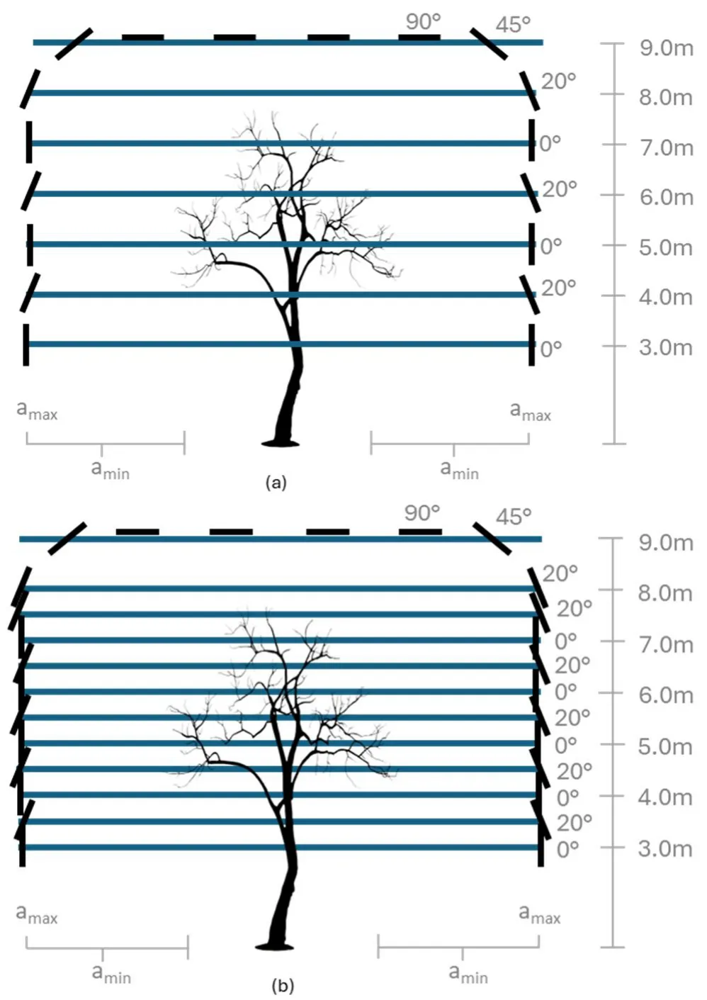
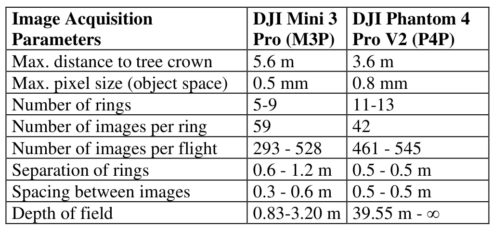
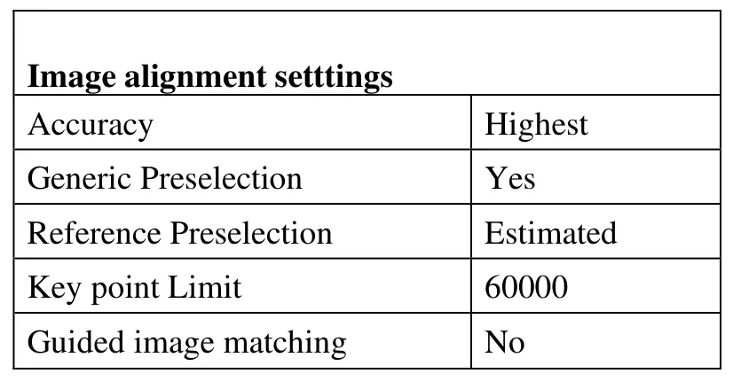
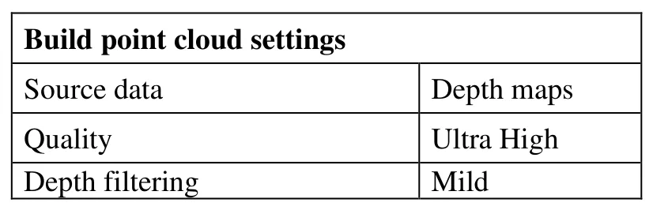

使用低成本 UAV 与 CraneCam 摄影测量重建落叶树三维结构以监测整冠新梢伸长3D Reconstruction of deciduous Trees using low-cost UAV- and Crane-based Photogrammetry for Monitoring Shoot Elongation across entire Canopies
偏应用但对低成本户外 photogrammetry、SfM/MVS 精度评估和点云骨架化有参考价值；与核心 SLAM/GNSS 算法距离较远。
一句话工作总结
用低成本 UAV/CraneCam 摄影测量实现毫米级树冠点云，为整树生长监测和骨架化提供数据基础。
摘要
论文面向树木整冠 shoot elongation 监测，研究低成本 UAV photogrammetry 和多相机 CraneCam 在真实生长季中的三维重建能力。作者报告使用亚 250g consumer UAV 可在整树尺度达到约 5–6 mm 的 3D 点精度，重建完整性约 92%–98%，并提出 3D 打印 ground-truth branch 来评估细枝等细节结构的重建能力。工作还讨论了数据采集、点云精度/分辨率/完整性和整树骨架化的操作挑战。
Tree growth determines how much CO2 is sequestered from the atmosphere and temporarily stored in woody biomass. At the same time tree growth is affected by increasing temperatures, more frequent drought periods, late frosts and other extreme events associated with climate change. While continuous measurements of radial (secondary) tree growth using dendrometers are well established, monitoring of shoot elongation (primary growth) has largely been neglected because suitable measurement techniques are lacking. As a result, the effects of climate change on primary tree growth remain insufficiently understood. This work aims at reconstructing native deciduous trees in 3D as a basis for measuring and monitoring shoot elongation over entire tree canopies. Here we explored the use of low-cost UAV photogrammetry and of a multi-camera CraneCam system under real-world conditions. Data were collected in two study areas over an entire growing season. We present sensor evaluations, photogrammetric data acquisition and processing strategies. A special focus is placed on the analysis of the resulting photogrammetric 3D point clouds in terms of accuracy, resolution and completeness. Results demonstrate 3D point accuracies of 5-6 mm for entire trees using consumer-grade UAVs weighing less than 250 g and a 3D reconstruction completeness between 92% and 98% depending on the UAV type. The paper introduces a novel 3Dprinted ground-truth branch to evaluate the capability to reconstructing fine-detail structures such as thin tree shoots. Finally, we discuss operational challenges and initial experiments towards a skeletonization of entire trees based on photogrammetric point clouds.
中文解读摘录
- 链接：https://arxiv.org/abs/2607.07905 ｜ PDF：https://arxiv.org/pdf/2607.07905
- 中文题名：使用低成本 UAV 与 CraneCam 摄影测量重建落叶树三维结构以监测整冠新梢伸长
- 关键信息：面向整棵树冠 shoot elongation 监测，比较低成本亚 250g consumer UAV 与多相机 CraneCam 在真实生长季的摄影测量采集和处理策略。结果报告整树 3D 点精度约 5–6 mm，UAV 3D reconstruction completeness 约 92%–98%，并提出 3D 打印 ground-truth branch 评估细枝重建能力。
- 为什么值得看：应用偏生态/林业，但它提供了低成本 UAV photogrammetry 在细结构、整树冠尺度、季节重复采集下的精度与完整性评估，对户外 SfM/MVS、点云骨架化和农业/林业数字孪生有实用参考。
- 需要核查：细枝 skeletonization 是否稳定；风、光照、叶片遮挡和重复纹理对 SfM/MVS 的影响；consumer UAV 的标定与地面控制策略；是否可迁移到机器人主动重建规划。
图表/页面预览

{kind=link}

{kind=link}

{kind=link}

{kind=link}

{kind=link}

{kind=link}

{kind=link}

{kind=link}
